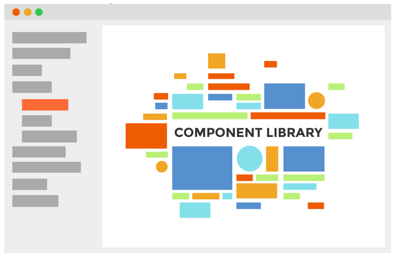

为您推荐
-
【基本功】深入剖析Swift性能优化2014年，苹果公司在WWDC上发布Swift这一新的编程语言。经过几年的发展，Swift已经成为iOS开发语言的“中流砥柱”，Swift提供了非常灵活的高级别特性，例如协议、闭包、泛型等，并且Swift还进一步开发了强大的SIL（Swift Intermediate Language）用于对编译器进行优化，使得Swift相比Objective-C运行更快性能更优，Swift内部如何实现性能的优化，我们本文就进行一下解读，希望能对大家有所启发和帮助。x2 10小时前
-
搭建CocosCreator组件库2014年，苹果公司在WWDC上发布Swift这一新的编程语言。经过几年的发展，Swift已经成为iOS开发语言的“中流砥柱”，Swift提供了非常灵活的高级别特性，例如协议、闭包、泛型等，并且Swift还进一步开发了强大的SIL（Swift Intermediate Language）用于对编译器进行优化，使得Swift相比Objective-C运行更快性能更优，Swift内部如何实现性能的优化，我们本文就进行一下解读，希望能对大家有所启发和帮助。x2 10小时前
-
 基于Docker搭建Jumpserver堡垒机操作实践2014年，苹果公司在WWDC上发布Swift这一新的编程语言。经过几年的发展，Swift已经成为iOS开发语言的“中流砥柱”，Swift提供了非常灵活的高级别特性，例如协议、闭包、泛型等，并且Swift还进一步开发了强大的SIL（Swift Intermediate Language）用于对编译器进行优化，使得Swift相比Objective-C运行更快性能更优，Swift内部如何实现性能的优化，我们本文就进行一下解读，希望能对大家有所启发和帮助。x2 10小时前
基于Docker搭建Jumpserver堡垒机操作实践2014年，苹果公司在WWDC上发布Swift这一新的编程语言。经过几年的发展，Swift已经成为iOS开发语言的“中流砥柱”，Swift提供了非常灵活的高级别特性，例如协议、闭包、泛型等，并且Swift还进一步开发了强大的SIL（Swift Intermediate Language）用于对编译器进行优化，使得Swift相比Objective-C运行更快性能更优，Swift内部如何实现性能的优化，我们本文就进行一下解读，希望能对大家有所启发和帮助。x2 10小时前 -
【基本功】深入剖析Swift性能优化2014年，苹果公司在WWDC上发布Swift这一新的编程语言。经过几年的发展，Swift已经成为iOS开发语言的“中流砥柱”，Swift提供了非常灵活的高级别特性，例如协议、闭包、泛型等，并且Swift还进一步开发了强大的SIL（Swift Intermediate Language）用于对编译器进行优化，使得Swift相比Objective-C运行更快性能更优，Swift内部如何实现性能的优化，我们本文就进行一下解读，希望能对大家有所启发和帮助。x2 10小时前